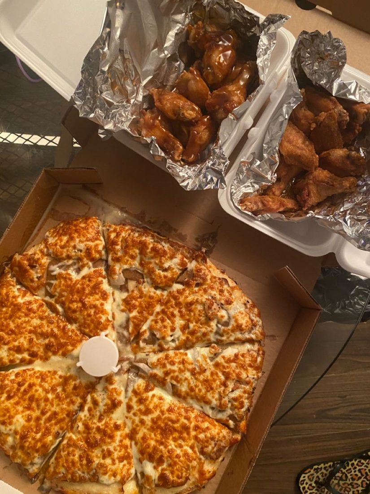
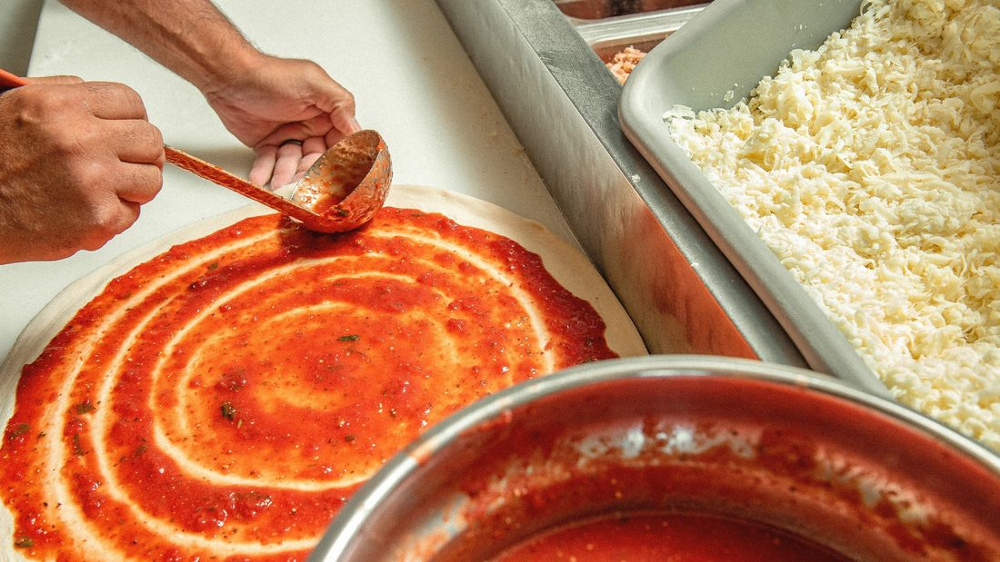
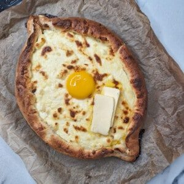
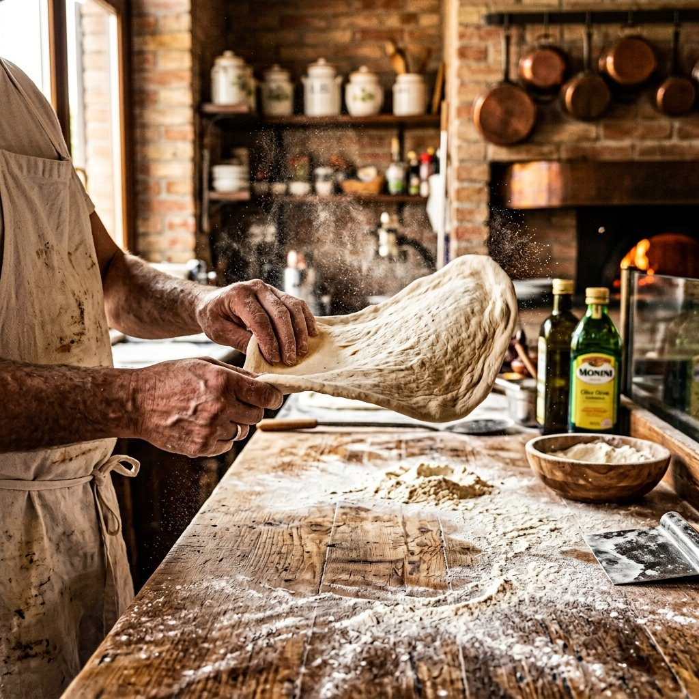
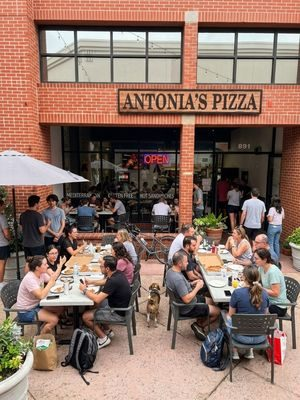
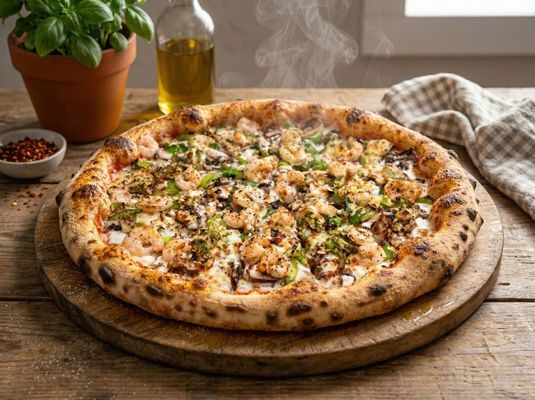
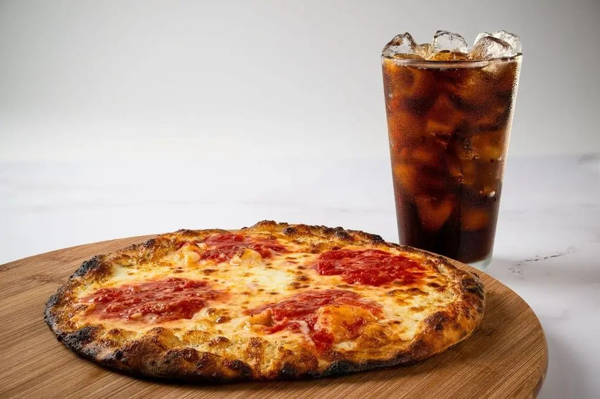
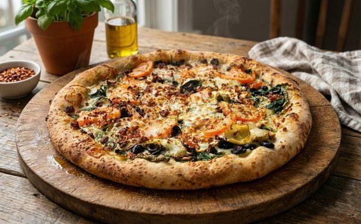
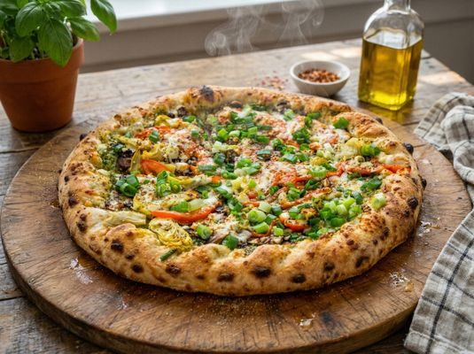

Most popular
2 XL Two-Topping Pizzas
$39.99
Hand-crafted pies from 10" to a giant 28", home-made tomato sauce and SLO-style seasoned crust — plus the one-and-only Ajarski dough boat. Open till 2AM on weekends. 🌙




Every pie starts with hand-crafted dough, our home-made tomato sauce and the legendary SLO-style seasoned crust. From calzones to creamy pesto pasta, wings to tiramisu — everything is made with the same care, at both downtown locations.
It's why locals call us the best pizza in San Luis Obispo — and why visitors plan their trip around a slice.
Spin the wheel — eight reasons the Central Coast calls this the best pizza in SLO. Tap a slice to bring it front & center.

Hand-Tossed Pies
Slice & A Coke
Pasta & Steak From The Grill
From The Grill

Deli & EspressoDrag it · Click it · Watch it spin
A warm, fluffy bread boat loaded with fresh mozzarella, feta, egg and butter — a Georgian-inspired original that's entirely its own thing. There's nowhere else in San Luis Obispo you'll find this. Come hungry.
Hand-crafted daily — the dough we're famous for.
Home-made tomato sauce, ladled in circles.
From 10" to a giant 28" — SLO-style seasoned crust.
Served hot. Open till 2AM on weekends.
Feeding the whole crew? Our deals keep it simple: real food, real value — no fine print, just more pizza on the table.

$39.99
$36.99
“Hands down some of the best pizza in SLO! Great service, perfect flavors, and an unbelievable crust. My nephew from Texas — who NEVER eats the crust — cleaned his entire plate.”
“Opening the box and immediately being encompassed in the scent of oregano and herbs was like being wrapped in a warm blanket. Cooked perfectly, didn't skimp on toppings. 10/10.”
“The crust, sauce, all the fresh toppings are exquisite. I love their pastas, especially the creamy pesto. And don't skip dessert — the tiramisu was literally the best I've ever had!”
“Had a crazy late shift and was craving high-quality food. Antonia's was still open and super accommodating for a late delivery. Crust on point, and the Pesto Chicken flavor profile is incredible.”
“Ordered the gyro pizza — tasty and quickly made, which worked great for my lunch break. The manakeesh pizza was quite tasty too. I'll definitely be back to try their Mediterranean dishes.”
In the heart of downtown SLO — your late-night headquarters, open till 2AM on weekends.
| Sun – Wed | 11:00 AM – 12:00 AM |
| Thu – Sat | 11:00 AM – 2:00 AM 🌙 |
Downtown Paso Robles — same hand-crafted pies, same legendary crust, in wine country.
| Sun – Thu | 11:00 AM – 12:00 AM |
| Fri – Sat | 11:00 AM – 2:00 AM 🌙 |
Hand-crafted pizzas from 10" to a giant 28", the one-of-a-kind Ajarski dough boat, Caesar salad, BBQ chicken pizza, buffalo fries, pastas, calzones, wings, tiramisu and cannoli — all made with the same care.
We're open until midnight Sunday–Wednesday, and until 2:00 AM Thursday–Saturday in San Luis Obispo (Friday–Saturday in Paso Robles). Late-night pizza cravings: covered.
Yes — takeout and delivery are available at both locations. Order online for pickup or delivery, or grab the Antonia's app to earn rewards and catch new deals.
A warm, fluffy bread boat loaded with fresh mozzarella, feta, egg and butter — a Georgian-inspired original you'll only find at Antonia's on Higuera Street. Four versions: Original, American, Mexicano and SLO Style.
San Luis Obispo, Cal Poly, Paso Robles, Templeton, Los Ranchos, Avila Beach, Santa Margarita and surrounding Central Coast neighborhoods.
Your next favorite slice is one tap away — pickup or delivery, till late.
Order Online Get the App 📱